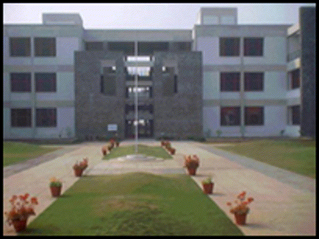

Jaypee University of Engineering and Technology
About Us
Jaypee University of Engineering & Technology, Guna has been established vide Government of Madhya Pradesh gazette extra ordinary No.3 of 2010 dated 29th April 2010 as a private university in the State of MP under the provisions of MP Niji Vishwavidyalaya Adhiniyam 2007. The university has been notified by the UGC under section 2(f) of the UGC Act, 1956 and Accredited by NAAC with Grade “A” in very first cycle of Accreditation in 2016. This University is sponsored by Jaypee Group.. It was earlier Jaypee Institute of Engineering and Technology, Guna, established in the year 2003 based on the MOU signed between Jaiprakash Sewa Sansthan (a not-for-profit trust) and the Government of Madhya Pradesh with an aim of becoming a Center of Excellence in Engineering and Technology in MP.